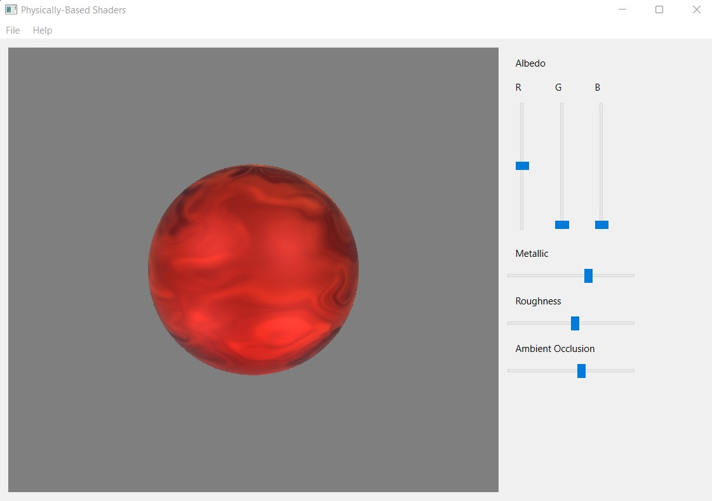

Physically-Based Rendering (PBR) Shader
Project Info
C++, OpenGL, GLSL
Overview
This project implements a Physically-Based Rendering (PBR) shader using the Cook-Torrance BRDF and Lambertian BRDF with Point Lights.
Features
PBR Shader
• Implemented Cook-Torrance BRDF and Lambertian BRDF.
• Computed point light intensity falloff.
• Applied ambient light and gamma correction.
Extra Credit
• Implemented 3D noise functions to modify surface material attributes.
• Created procedural materials with FBM and simple noise.
Implementation
• Wrote GLSL code for PBR shader.
• Implemented point light intensity falloff and ambient light.
• Applied gamma correction and color space remapping.